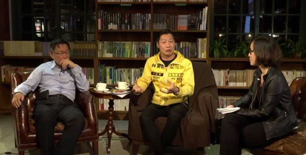

柯文哲夜問新國會系列座談來到第二場！遇上時代力量中正萬華區候選人林昶佐，儼然是前醫師對上搖滾歌手。曾比喻民進黨為哺乳類動物、國民黨則是恐龍，柯文哲在座談會前被媒體問及，覺得時代力量像什麼呢？柯文哲說這是個好問題，「就是要他們來證明他們像什麼」。
由首都改革陣線主辦、《BuzzOrange》總編輯張育寧所主持的「深夜柯文哲，夜問新國會」系列座談，邀請台北市長柯文哲與台北市 8 個選區跨黨派的立委參選人，討論新國會、新政治的可能，以及日後進入國會，中央與地方如何搭配合作。
經過前一天與范雲對談，柯文哲今日對上林昶佐，更採納了網友的即時意見，直接問林昶佐對於性專區的意見，將座談會拉至高潮。究竟柯文哲與林昶佐誰比較敢問呢？我們一起來看──
一開場柯文哲便單刀直入地問林昶佐，究竟「時代力量」身為新興政黨，與民進黨、台聯的不同在哪？要如何脫穎而出？
林昶佐表示，越來越多年輕人關心社會，卻可能不得其門而入。
「我們這些比真正的年輕人又老一輪的，我們來怎麼樣把空間再撐大一點」，讓更多年輕人來從政，是林昶佐的初衷。
他指出，民進黨、台聯過於傳統，讓許多有心想要改變社會的年輕人，難以進入與改變。他認為年輕勢力與民進黨、台聯的距離，短時間無法改變，因此他想，「我們來做一點不一樣的事情吧！」，籌組新政黨，讓本來對政治冷漠的人、對傳統政黨有尷尬距離的人，能夠一起出來做事。
林昶佐自豪地說，在他的競選團隊裡，有音樂圈、文化圈的朋友，也有愛打英雄聯盟 (LOL) 的青年，還有加藤鷹後援會的會長，各方人馬都聚集在時代力量。這些人也許並不如大家印象中會參與政治的年輕人，卻恰恰反映了真實的大眾樣貌。透過時代力量將這些人拉進來，讓近年來社運活動中的年輕力量，不因事件中斷而終止，而是持續運作，在未來化為政治力量。
柯文哲也反問，這樣聽起來像是因為無法加入民進黨，所以籌組新政黨。林昶佐則回應，自己並沒有去計算與民進黨或台聯的距離，而是盡力做自己。
柯文哲要林昶佐講出，比起對手國民黨候選人林郁方，自己為什麼會是「更好的產品」？林昶佐強調立委是代表整個選區的人民進入立法院，而林郁方卻是「黨意凌駕民意」，並沒有身為立委的自覺。
「我有自覺我是中正萬華的代表」，林昶佐表示立委不該與民意脫節，進入國會後，他會用像是戰報、網路直播等方式，與民眾溝通，讓自己真正成為民意的「代表」。
近幾個月來勤跑地方基層，林昶佐發現竟然有高達 9 成的民眾，並不知道區域立委到底是誰，顯示林郁方與民眾的距離。柯文哲認為這豈不是在說中正萬華區的民眾「一看到國民黨就蓋下去」？該如何改變？林昶佐則說其實去年柯文哲在中正萬華選區就大贏，然而議員部分仍是藍大於綠。柯文哲聽完，提議林昶佐可以製作文宣：「只要你是聰明的人，就不會看到國民黨就蓋下去」
林昶佐大呼：「你不要害我被告！」
接著柯文哲問起林昶佐在國際特赦組織和閃靈樂團的經驗，才知道原來林昶佐在擔任國際特赦組織台灣分會會長時，將整個分會進行內部改革。並且，由於總會有「各國分會不能救援本國個案」，對台灣則有「台灣分會不能救援中國個案」的備忘錄，他認為這容易被誤解為對兩岸關係的定義，致力廢除此備忘錄，也終於在連任後成功廢除這項在台灣廿年的限制。而身為閃靈樂團團長，林昶佐也是許多音樂建設的諮詢委員，從過去與政府打交道的經驗，林昶佐表示相當支持柯文哲提出的「外部參與」，專家不能只是「人皮印章」，而是要尊重專業。
柯文哲注意到參與直播座談的網友提到萬華寶斗里，詢問林昶佐對性專區的想法。林昶佐說，憲法已說明性工作是合憲的，他認為要規劃性專區，「只是，沒有任何一個地區願意去做」。林昶佐表示，推動性專區合法化尚不在他進入國會首要推動的法案，但若台北市府需要，他可以放進去。將問題丟回給柯文哲。
而後林昶佐更抓緊時機問柯文哲：「可以處理掉中正紀念堂嘛？」對於這個棘手的議題，柯文哲回應：「能不能把歷史當作歷史看待？」
林昶佐提出改變台北的觀光旅遊手冊，因為手冊說中正紀念堂是偉人的地方，他認為要對國際宣傳蔣介石殺了多少人。柯文哲舉德國例子，指出之所以沒有希特勒紀念館，是因為希特勒的定位在德國是有共識的，然而蔣介石在台灣的定位還沒有共識。柯文哲認為台灣要突破藍綠，就要大家可以和不喜歡的人共同生活。
接連討論幾個較具爭議性的議題，柯文哲最後提醒，議題發酵需要時間，現在選舉僅剩三十天不到，要在未來兩週將自己的論述講清楚。另外，他也建議林昶佐，選區在中正萬華，戳藍綠議題會激起對抗，反而要使自己在選民眼中是「我雖然不喜歡你但我可以忍受你」，藉此撐起政治能伸展的空間。